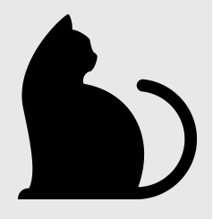
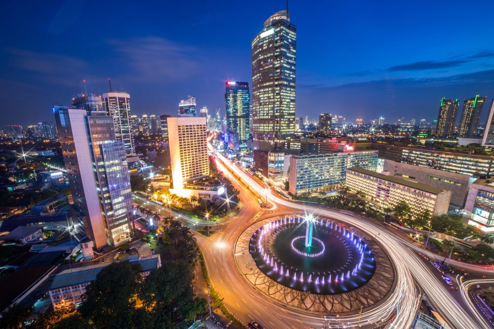

<html>
    <head>
        <title>Tugas Pemrograman Web</title>
        <link rel="stylesheet" href="style.css" type="text/css">
    </head>
</html>
<body>
    <header>
        <div class="nav-bar">
             
            <ul class="menu">
                <li> <a href="index.html">Home</a> </li>
                <li> <a href="Profile.html">profile</a> </li>
                <li> <a href="hometown.html">hometown</a> </li>
                <li> <a href="food.html">food</a> </li>
                <li> <a href="tourist.html">tourist</a> </li>

            </ul>

        </div>
        <div class="hometown">
            <h1 style="font-size: 40p">JAKARTA</h1>
            
            <p style="font-size:30px">Jakarta, officially the Special Capital Region of Jakarta (Indonesian: Daerah Khusus Ibukota Jakarta), is the capital and largest city of Indonesia. 
                Located on the northwest coast of the world's most populous island of Java, it is the centre of economy, culture and politics of Indonesia with a population of more than
                ten million as of 2014. The Jakarta metropolitan area has an area of 6,392 square kilometres, and is the world's second most populous urban area after Tokyo, with a 
                population of 30 million as of 2010. Jakarta's business opportunities, as well as its potential to offer a higher standard of living, have attracted migrants from across 
                the Indonesian archipelago, making it a melting pot of numerous cultures. Jakarta is nicknamed the Big Durian, the thorny strongly-odored fruit native to the region, as 
                the city is seen as the Indonesian equivalent of New York (Big Apple).</p>

        </div>
    </header>
</body>